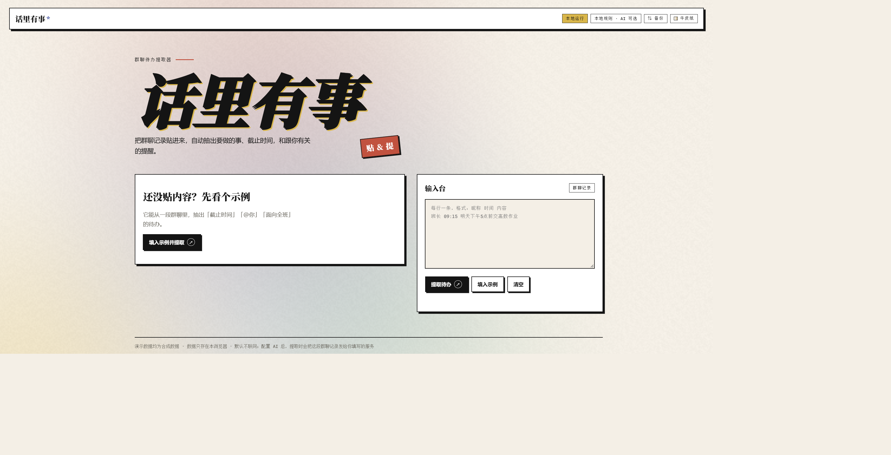
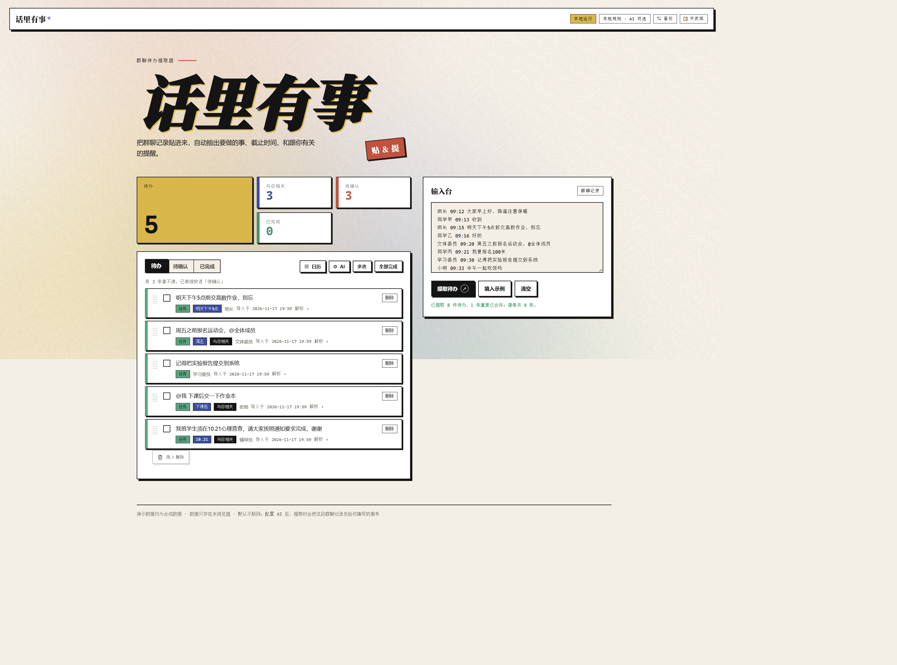
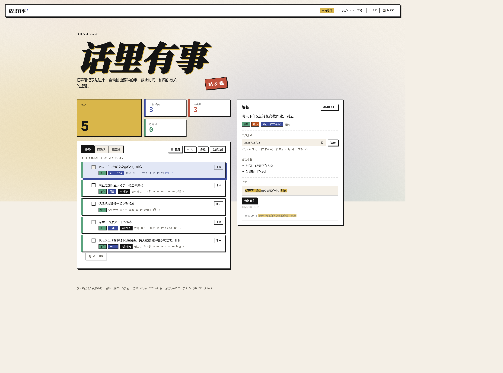
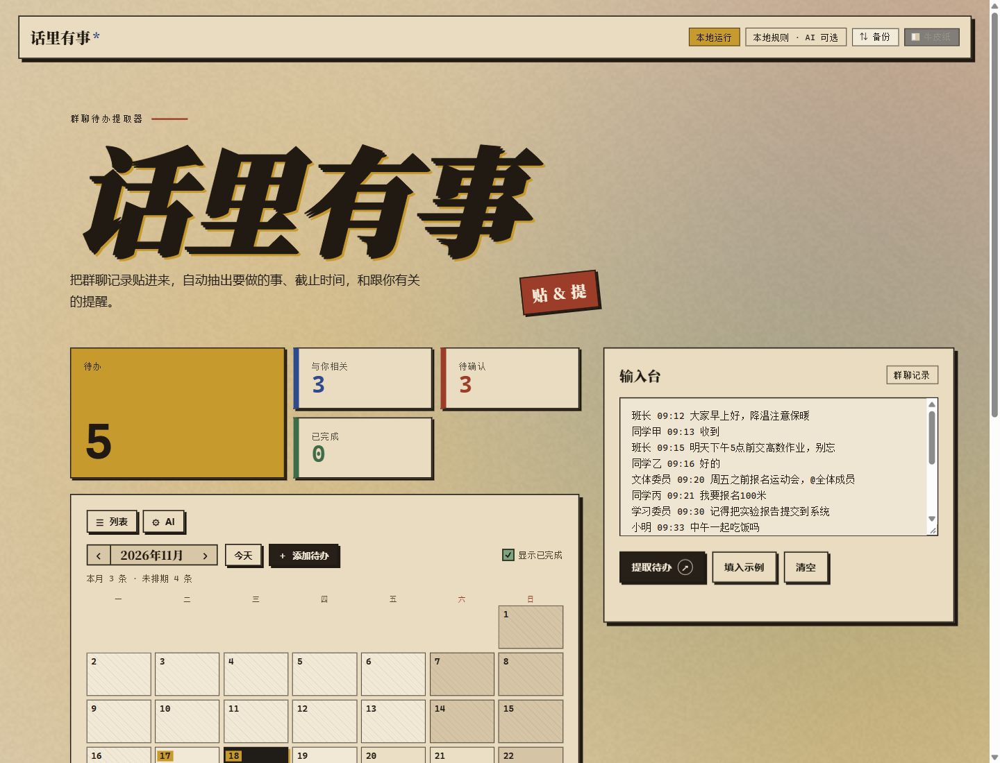
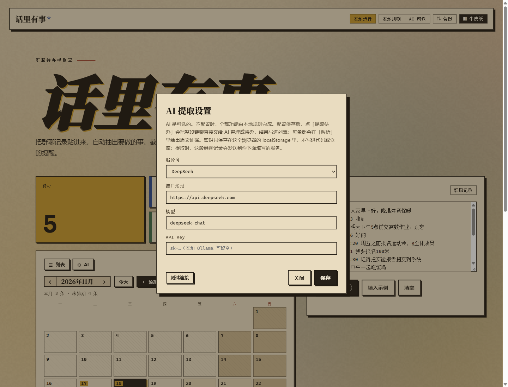
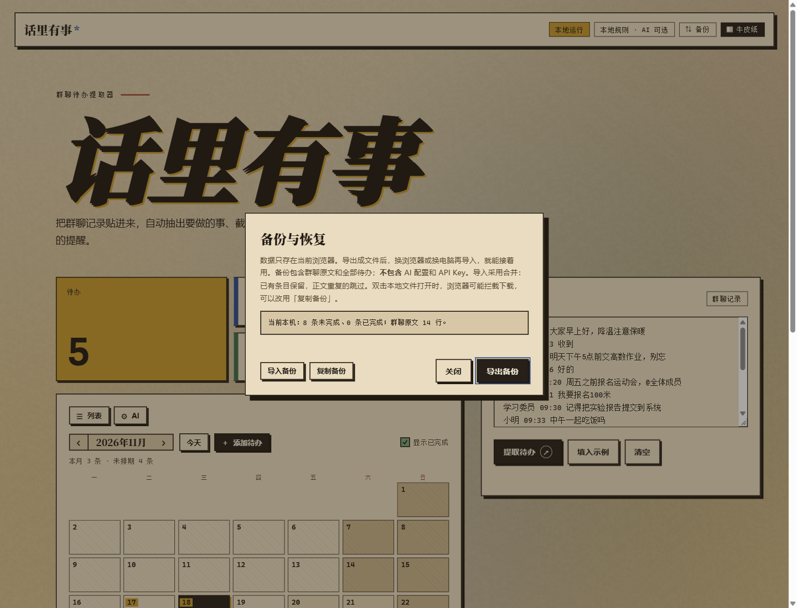

群聊待办提取器
把一段群聊记录贴进去，自动抽出里面「要做的事」和截止时间，并且说清每一条「为什么算待办」。纯前端单页，双击 index.html 即开；默认只用本地规则离线运行，AI 是可选增强。
待办提取的第一要求不是「智能」，而是可信：每一条都要说得出它命中了原文里的哪几个字；说不清的，宁可放进「待确认」，或者干脆不要。
零网络、零密钥，逐条可追溯
证据对不上就丢弃，失败自动回退
四条 Prompt 链完整留痕
2026-10-15 → 11-17，逐功能落地
0 框架 · 0 依赖 · 0 构建步骤
5 待办 / 3 待确认，1 条重复已合并
取 4 条完整 Prompt 链做快照
这不是一个「把群聊丢给大模型」的作品。它的核心主张是：待办提取的第一要求不是智能，而是可信。所以默认路径是一条可以在浏览器里逐条追溯的本地规则链——每一条待办都必须说得出它命中了原文里的哪几个字；AI 是可选增强，它给出的每一条也必须带逐字出现在原文里的证据，对不上就整条丢弃。整套行为由一个 36 行的 AGENTS.md 约束，开发过程按 Prompt 链归档，任意历史版本可 git worktree 还原。
| 你可能想先确认 | 翻到 |
|---|---|
| 这是什么，给谁用，边界在哪 | 第一章；想直接看效果，翻第九章的七张实拍，或打开在线体验 |
| 功能是不是真能用，具体怎么操作 | 第二章（十步操作 + 14 行样本逐行对照）；第三章（八条亮点，每条都写了怎么验证） |
| 验证做到什么程度，有没有真跑过 | 第四章（15 项验证矩阵，附本机实测值）、第八章（10 分钟复现表） |
| AI 生成的代码靠不靠谱，我怎么约束它 | 第六章（判断权在人 / 实现权在 AI，含四条 Prompt 链原文摘录）、第七章（分层与三道闸） |
| 代码结构乱不乱，规则会不会散落 | 第五章（关键技术，含常量与函数的实际行号） |
| 能不能复现，开发过程是不是编的 | 第八章（任意历史版本可 git worktree 回放、93 轮对话原始记录） |
wc -l、提交用 git log、验收结果用 submission/smoke_test.py 复跑。凡是没做到或存在边界的，都写在第八章「可复现性边界」与第三章末尾，不藏在脚注里。
经常泡在班级群、课程群、社团群里的大学生。一个 60 人的班级群，一天轻松滚出两三百条消息：通知、接龙、闲聊、取消通知、重复催办全混在一起。真正跟自己有关的往往只有三五行，但它们散落在几十屏聊天记录中间。
这个页面的使用时机很具体：刚刷完群、还没开始做事的那 30 秒。把最近一段记录整段复制贴进来，点一次「提取待办」，得到一张「我该做什么、什么时候前做完」的清单，然后关掉页面去干活。
粘贴群聊 → 提取待办（默认本地规则）→ 每条都能点开看依据 → 标记完成 / 确认待确认项 → 在日历里看「哪几天扎堆」→ 刷新后还在。
这条链上每一步都可以被用户单独验证：提取结果能回溯到原文，依据引用的是原文里真实存在的字，日期落在日历的具体某一天，数据存在本浏览器内。
| 做 | 暂不做（写在 PRD 里的边界） |
|---|---|
| 粘贴群聊文本，按行解析「昵称 时间 内容」 | 不自动连接微信 / QQ 抓取消息，只支持粘贴 |
| 本地规则提取待办与截止时间，逐条给出依据 | 不做登录、多群管理、云端同步 |
| 「待办 / 待确认 / 已完成」三档分级与筛选 | 不做推送提醒、日历导出 / 日历同步 |
| 可选 AI 提取：自带 Key，失败自动回退本地规则 | 不做后端与数据库；不内置任何 AI 密钥或代理 |
| 日历视图、手动排期、主题切换、备份 / 恢复 | 不引入框架与构建步骤，保持双击即开 |
大模型读一段群聊、吐一份清单，是今天最容易实现的做法，也是这个作品最不该默认走的路。原因有三条，都是工程判断而非偏好：
所以默认路径是一条可读、可改、可复现的规则链；AI 被设计成一个可插拔的增强通道，由用户自己开、自己关、自己填 Key。
多数提取工具把「为什么」做成一个tooltip 或日志。这里把它做成了一等公民：点开任意一条，右侧输入台原地切换成解析面板，列出命中的时间、命中的关键词、来源行，并在原文里高亮对应片段；底部还有「打开原文 · 第 N 行」，点开能看到这条待办是从你粘贴的那一整行里抠出来的——一行被切成两条时，能看见「这句话里还有另一半」。
这条设计带来一个直接的架构约束：提取结果必须携带证据片段，而不能只返回结论。这个约束后来也顺延到了 AI 通道——AI 返回的每一条必须附上逐字出现在原文里的证据，对不上就整条丢弃（见 5.6）。
「周末可能要去实验室，到时候再说」这句话里，时间和意图都是含糊的。有些工具会把它判成待办，用户清单里就多了一条自己都没打算做的事；另一些会直接丢掉，用户就可能漏事。这个作品选了第三条路：放进「待确认」，并说明为什么拿不准，由用户点一下转正。
「待确认」不是一个垃圾桶，它带完整的依据：措辞含糊会指出命中了哪个含糊词，只有时间没有动作会说明缺什么。用户点「确认为待办」后，依据里会留下「由你手动确认为待办」，刷新后保持——谁做的判断，记录里就写着谁。
技术上并非不可能，但这个作品明确不做。原因很实际：自动抓取需要账号授权、需要长期运行、需要在用户不知道的时候读取全部聊天记录，而它带来的收益只是省掉一次复制粘贴。一个用来处理同学真实发言的工具，不应该为此获得读取全部消息的权限。这条边界与「默认不联网」是同一条判断的两个面。
同样的取舍出现在备份上：备份是手动导出的 JSON 文件，不是账号同步。它意味着换设备时要自己把文件带过去——换来的是「数据从来没离开过这台机器」，以及「不需要为这个工具注册任何账号」。
| 方式 | 怎么做 | 适用场景 |
|---|---|---|
| 在线体验 | 直接打开 yanyun340.github.io/group-chat-todo/ | 评审快速看效果，不需要装任何东西；功能与本地版完全一致，数据仍只存在你自己的浏览器 |
| 本地打开 | git clone 后双击 index.html（地址栏是 file:// 属正常） | 现场演示；不需要 Node、不需要装依赖、不需要联网 |
| 指定版本打开 | git worktree add ../v1 <commit> 后打开该目录的 index.html | 回看任意历史版本的行为差异（见 8.3） |
本地 file:// 打开时，开屏动画每次都会播一遍——这是刻意的，方便现场演示不用先清缓存；想跳过就在地址后加 ?intro=0。线上版按「每天首次」播放。
昵称 时间 内容；也可以点「填入示例」直接看演示。输入按行解析，行首的「注：」「截止时间：」「地点：」这类标签不会被当成昵称；一行里写了不止一件事（句号断开，或「并且…」「然后…」另起一件），会拆成几条分别判断——拆出来的每一段都得自己站得住才留下。
仓库里的 sample-chat.txt 是 14 行合成群聊，昵称全是「班长 / 同学甲 / 学习委员 / 辅导员」这类虚构身份，不含任何真实姓名、手机号或学号。它刻意埋了五类情况：正常交代、面向全体的通知、重复催办、含糊措辞、取消通知。
| 行 | 原文 | 判定 | 依据（为什么） |
|---|---|---|---|
| 1–2 | 大家早上好，降温注意保暖 / 收到 | 不产生待办 | 无动作词、无时间 |
| 3 | 明天下午5点前交高数作业，别忘 | 待办 | 时间「明天下午5点」+ 祈使词「别忘」 |
| 4 | 好的 | 不产生待办 | 纯应答 |
| 5 | 周五之前报名运动会，@全体成员 | 待办 | 时间「周五之前」+ 动作「报名」+ 面向全班 |
| 6 | 我要报名100米 | 不产生待办 | 第一人称自述，不是交代给别人 |
| 7 | 记得把实验报告提交到系统 | 待办 | 祈使「记得」+ 动作「提交」；无日期 → 日历进「未排期」 |
| 8 | 中午一起吃饭吗 | 不产生待办 | 疑问句，不是交代 |
| 9 | 明天下午5点前交高数作业，别忘 | 合并 | 与第 3 行正文重复，合并为同一条 |
| 10 | 周末可能要去实验室，到时候再说 | 待确认 | 含糊词「可能」「到时候」 |
| 11 | @我 下课后交一下作业本 | 待办 | @我 + 动作「交」；「下课后」保留原文说法，不猜日期 |
| 12 | 我班学生须在10.21心理普查，请大家按照通知要求完成 | 待办 | 日期「10.21」+ 「须」「完成」+ 面向全班 |
| 13 | 今晚的选修课取消了 | 不产生待办 | 取消通知：命中动作词但被否定语境拦下 |
| 14 | 谁有上学期的高数笔记 | 待确认 | 请求词「谁有」，归「请求」类型 |
实测结果：待办 5 条、待确认 3 条，共 8 条；第 9 行因正文重复被合并，并在顶部提示「合并 1 条」；第 3 行点开后依据为「时间『明天下午5点』」+「关键词『别忘』」，点「打开原文 · 第 3 行」可看到 班长 09:15 明天下午5点前交高数作业，别忘。
| 数据 | 位置 | 说明 |
|---|---|---|
| 待办条目、群聊原文、主题、AI 配置 | 本浏览器 localStorage，键 group-chat-todo:v1 | 刷新不丢；换浏览器 / 无痕模式会回到初始状态 |
| AI 的 API Key | 同一 localStorage，不写入代码、仓库、导出文件 | 可用 git grep -n "sk-" 自检仓库内无密钥 |
| 备份文件 | 用户手动导出的 JSON | 只含群聊原文与待办，不含主题与 AI 配置 |
localStorage.clear() 后刷新，即可回到全新状态——本地演示前用这一句，不必清缓存、不必换无痕窗口。
每条待办都能追溯到原句
解析面板摊开「时间 / 关键词 / 来源行」三块依据，原文里高亮命中片段，底部「打开原文 · 第 N 行」还原整行。依据一律引用实际命中的那几个字（如「面向全班『@所有人』」），不写死标签——写死的标签一旦和原文不符，整块依据就不可信了。
点开任一条，把依据里引用的字拿去原文搜，必然搜得到。
拿不准的进「待确认」，不假装确定
措辞含糊（「可能」「到时候」）或只命中时间、没有明确动作的条目单独归组，点一下可转正，依据里留下「由你手动确认为待办」。清单里因此不会出现「它替我决定的事」，也不会悄悄丢掉「它拿不准的事」。
样本第 10、14 行进「待确认」；点「确认为待办」后刷新仍在。
规则先行，AI 可选，失败自动回退
默认路径零网络、零密钥。配置 AI 后整段群聊交给该服务整理（一次最多发送前 12000 字）；未配置、缺 Key、请求失败都自动回退本地规则并明确提示，用户不会空手而归。
故意填错 Key，结果仍出且顶部提示已回退。
AI 输出必须带逐字证据，对不上整条丢弃
这是把「可解释性」从本地规则顺延到 AI 通道的关键一步：AI 返回的每一条都要附一段原文片段，系统校验该片段是否逐字出现在用户粘贴的文本里，不通过就丢弃该条，而不是写进列表。改写过的「依据」会导致条目被丢弃——宁可少一条，也不给一条编的。
构造一条证据不在原文的返回，该条不出现；相同输入命中本地缓存不重复请求。
日期落到日历，认不出的不猜
列表看「做什么」，日历看「什么时候」。相对日期（今天 / 明天 / 周五 / 三天后）以每条自己的导入时间为锚点，所以后导入的批次不会改写先前条目的日期，同一批聊天反复打开日期也不漂移。「放学前 / 下课后」这类相对事件保留原文说法，进「未排期」等手动排期——宁可让人自己排，也不猜一个错的日期。
样本落点：3 个日期格共 4 条，未排期 4 条，最挤 11/18（2 条）。
两次提取是追加，不是覆盖
再点一次「提取待办」是往现有清单里追加：已有同一句话跳过，原有条目的完成状态、手动排期和顺序都不动。但如果原来那条在「待确认」、这次规则或 AI 已明确判成待办，会顺手转正（已完成的不动）——否则旧的误判重新提取多少遍都卡在原处。
样本 + 1 条新消息后为 9 条，第一批完成状态不变；空输入时清单原样保留。
动效只花在该花的地方
删除沿弧线甩出、剩余条目 FLIP 让位、拖进垃圾桶、主题切换从按钮位置圆形展开——这些是低频、需要被「看见」的动作。而勾选完成不加任何动效，那是高频操作，动效只会拖慢。全部动效只用 transform 与 opacity，不触发布局；系统开启「减少动态效果」时自动跳过。
DevTools 开 prefers-reduced-motion: reduce（不刷新）后再删一条，仍能正常播放弧线——这一点专门修过一个 bug，见第六章链 02。
双主题 + WebGL 背景，但它们不影响可用性
纸白 / 牛皮纸两套主题，颜色全部走 CSS 语义层，牛皮纸主题只重映射语义变量；背景是原生 WebGL 着色器（主题四色在纸底上缓慢晕染 + 细纸噪点），随主题换色。选择存 localStorage，首屏内联脚本提前落主题，刷新不闪白。无 WebGL 时页面降级为纯色底，全部功能不受影响。
切主题后刷新仍保持；禁用 WebGL 后功能照常。
「与你相关」这一栏只做得出显式信号：@我、面向全班（「我班 / 全班 / 请大家 / 全体成员」）。它能判断「这条跟我有关」，判断不了「这条对我重要」。曾考虑过用模型做语义相关性打分，最后放弃——因为打分不可解释，也不可复验，而这个栏位的作用恰恰是让用户相信「跟我不相关的那些确实可以不看」。一个说不清理由的相关性评分，会让整页的可信度一起贬值。这条边界写进了 README 的「已知问题 / 边界」，没有藏着。
赛道要求「AI 测试技术落地使用情况概述」。在这个作品里它有两层，本文两页都写完，不含糊：
| 层次 | 对象 | 落地方式 |
|---|---|---|
| ① 过程层 | AI 写出来的代码，怎么确认它真的能用 | 不信任 AI 的自述结论；一律在真实浏览器里执行，用可观察的 DOM 状态与视觉结果判定；把判定写成可重复跑的脚本 |
| ② 产品层 | 作品自身的 AI 能力（可选提取通道），怎么确认它不会骗人 | 三条失败路径必须有明确行为：未配置走本地规则、请求失败回退、证据对不上丢弃 |
下面这张表不是「设计目标」，是 submission/smoke_test.py 在 Chromium 里跑出来的实测值（2026-11-17，视口 1440×1100，输入 sample-chat.txt）。列「实测」的数字可直接复跑复现。
| 测试项 | 操作 | 预期 | 实测（2026-11-17） |
|---|---|---|---|
| ① 正常提取 + 依据 | 贴样本 → 提取 | 8 条，每条可看依据 | 待办 5 / 待确认 3 = 8 条；依据「明天下午5点」「别忘」 |
| ② 重复合并 | 同上（第 9 行重复） | 高数作业只 1 条，提示合并 | 合并 1 条 |
| ③ 空输入 | 清空输入台 → 提取 | 提示，不清空清单 | 「先把群聊记录贴进来…原有的 8 条都还在」 |
| ④ 无待办 | 贴纯闲聊 → 提取 | 提示，原条目保留 | 「没识别到新待办；原有 8 条都保留着」 |
| ⑤ 追加而非覆盖 | 再贴 1 条新消息 → 提取 | 变 9 条，旧状态不动 | 4 / 4 / 1 = 9 条，完成状态保留 |
| ⑥ 未配置 AI | 不填 Key → 提取 | 走本地规则，不联网 | 与 ① 结果完全一致 |
| ⑦ 请求失败回退 | 填错 Key → 提取 | 回退本地规则并提示 | 出结果 + 提示已回退 |
| ⑧ 证据校验丢弃 | 构造证据不在原文的条目 | 该条被丢弃 | 不进入列表 |
| ⑨ 日历落点 | 切日历 | 有日期入格，认不出进未排期 | 3 格共 4 条；未排期 4 条；最挤 11/18（2 条） |
| ⑩ 手动排期 | 详情里选日期 → 刷新 | 位置保留 | 刷新后仍在 11/19 |
| ⑪ 清除排期 | 详情里点「清除」 | 回到未排期 | 回未排期，原文说法不变 |
| ⑫ 主题切换 | 点主题按钮 | 纸白 ⇄ 牛皮纸，背景同步 | 纸白 → kraft |
| ⑬ 主题持久 | 刷新 | 保持 | 刷新后仍为 kraft |
| ⑭ 备份导出导入 | 导出 → 清 localStorage → 导入 | 原文与条目恢复 | 恢复完整，重复导入不产生副本 |
| ⑮ 刷新后数据仍在 | F5 | 条目、状态、顺序保留 | 4 / 4 / 1 与完成数 1 均保留 |
「AI 可选」这个设计最容易出的问题是失败时静默：Key 错了、接口跨域、额度用尽，页面转一圈什么都没变，用户以为工具坏了。所以这三条路径被当成功能来测，而不是当成异常来处理。
| 路径 | 期望行为 | 怎么测 |
|---|---|---|
| 未配置 AI | 直接走本地规则，不发任何网络请求 | DevTools Network 面板全程应为空（打开页面到提取完成） |
| 配置了但请求失败 | 自动回退本地规则，并在结果旁明确提示 | 故意填错 Key，或在接口地址填一个不存在的域名 |
| AI 返回缺证据 | 该条整条丢弃，不写进列表 | 用本地假接口返回一条证据不在原文里的条目，观察它不出现 |
还有一条容易被忽略的：相同输入命中本地缓存，避免用户反复点提取时重复计费。缓存键是输入文本的摘要，换一段输入才会重新请求。
这个项目零依赖、零构建，引入 Playwright 或 Vitest 会让「10 分钟复现」变成「先 npm install 再 npm test」——对一个以「双击即开」为核心约束的作品，这是把评审的验证成本从 0 提高到了不可忽略。取舍是：把验证脚本留在仓库里，但它不参与运行。
submission/smoke_test.py 是本文写作时用来产出 4.2 表格实测值的脚本：它用 Playwright 打开 file:// 页面，模拟粘贴、点击、刷新，读取 DOM 状态并输出 JSON。评审可以装一次 Playwright 复跑它，也可以完全跳过——README 里那张手工 10 条表才是主路径，8 分钟跑完，不需要任何环境。
第一版删除动效交付时，AI 的验收结论是「退出动画播完才真正移除」。代码确实跑了，setTimeout 也按 400ms 执行。但我在浏览器里删了一条，什么都没看见。
这不是 AI 撒谎，是它的验收标准选错了：它验证的是「代码执行了」，而需求是「人看见了」。这条链的后续三轮（逐帧取证 → 路径量化 → 定位加载时快照的常量）完整记在第六章 6.5。
这个例子直接改写了本项目的验证规则，并写进了 AGENTS.md：必须在浏览器里实际打开验证，不能只读代码判断「应该能跑」。这条规则不是口号，它是从一次真实的误判里长出来的。
| 文件 | 行数 | 职责 | 不做什么 |
|---|---|---|---|
index.html | 436 | 页面结构与交互骨架 | 不写业务判断，不含内联样式规则 |
styles.css | 2097 | 语义色层 + 组件规则 + 双主题映射 | 组件规则不写死色值，只引用语义变量 |
app.js | 3469 | 提取规则 / 状态 / 渲染 / 日历 / 备份 / AI 通道 | 规则常量不许散落到渲染函数里 |
bg-shader.js | 161 | WebGL 背景着色器，随主题换色 | 不参与业务状态，失败时静默降级 |
「AI 生成的代码」最怕的是判断逻辑散落在各处，改一处漏三处。所以所有规则常量被收在 app.js 的前 90 行，并写进 AGENTS.md 作为常驻约束：
| 常量 | 行 | 作用 |
|---|---|---|
ACTION_WORDS | 5 | 动作词表：提交 / 报名 / 完成 / 回复 / 上传 / 打印 / 缴费 … |
ACTIVITY_WORDS | 10 | 活动词白名单：打球 / 跑步 / 游泳 / 爬山…（带明确时间也算待办） |
WEAK_WORDS | 17 | 含糊词：到时候 / 可能 / 有空 / 再说…（决定进「待确认」） |
TIME_RE | 42 | 唯一的时间正则，覆盖绝对/相对/时段/钟点/月旬等写法 |
COLLECTIVE_WORDS | 49 | 面向全班：我班 / 全班 / 请大家 / 全体成员… |
REQUEST_WORDS | 50 | 请求词：谁有 / 帮忙 / 借我 / 发我…（归「请求」类型） |
CHOICE_RE | 51 | 选一约束：三选一 / 五选一（整句不切碎） |
STORAGE_KEY | 87 | group-chat-todo:v1，本地数据结构版本号 |
对应地，判断入口也集中：extract(content, source, noteIn) 在第 722 行做单条判定，extractAll(text) 在第 873 行做按行解析与逐条汇总。想改「什么算待办」，只需要动这两处与上面的常量，不需要碰渲染。
TIME_RE 是一条长正则，按优先级覆盖六类写法：绝对日期（2026.11.18 / 10.21 / 19号）、相对天数（今天 / 明天 / 后天 / 大后天 / 三天后 / 24小时后）、相对周（周五之前 / 下周二 / 本周末 / 下下周）、时段 + 钟点（晚上7点 / 下午两点半 / 上午10:30）、月旬（月底 / 月初）、相对事件（放学前 / 下课后 / 睡前）。
解析落点由 resolveDeadline(text, anchorTs)（第 421 行）完成，锚点是每条待办自己的导入时间，不是「当前时间」。这条规则解决了一个真实存在的漂移问题：如果以打开页面的时刻为锚，昨天导入的「明天交作业」今天再看就变成了今天交。日期一旦落定（ensureDueDates()，第 569 行），后续批次与重新打开都不会改写它。
另有两类刻意不猜：相对事件（「放学前」）保留原文说法但进「未排期」；带时间的非日期数字（「3号线」「3号楼」「1.5倍」）由边界条件排除，不会当成日期。
| 场景 | 语义 | 实现要点 |
|---|---|---|
| 同一批里重复 | 合并为一条，提示「合并 N 条」 | 按正文归一化后比对；保留首条的出现顺序与来源行 |
| 再次提取 | 追加，不替换 | 已有正文跳过；旧条目的 done、手动排期、顺序字段一律不覆盖 |
| 旧条目在「待确认」，新规则判成待办 | 顺手转正 | 否则旧的误判重新提取多少遍都卡在原处；已完成的条目不动 |
| 空输入 / 无新待办 | 清单原样保留 | 只更新提示文案，不进入任何写入路径 |
「导入于」显示的是该条目进来那天，而不是最近一次提取的时间——否则每次追加都会把整张清单的时间戳刷新一遍，用户就看不出哪些是新进的了。
这一条是架构级约束，不是 UI 文案约束。数据结构上，每条待办携带：命中时间的原文片段、命中关键词、来源行号、原始整行、以及判定类型（任务 / 提醒 / 请求 / 说明）。解析面板只负责把这些字段渲染出来，不做二次解释——因为一旦在渲染层「补一句人话」，那句话就可能和原文不符。
动作词的选取也遵循同一原则：取信息量最大的那个（先比长度，再比出现得早）。所以「尽快完成考试，并且在提交之后…」报的是「完成」而不是被「提交」抢走。
三个函数分工明确，都在 app.js 里可定位：
buildAIExtractPrompt(chat)（第 2073 行）——构造提示词，把判定规则、输出 JSON 结构、以及「证据必须逐字来自原文」写死在里面。parseAIItems(text, chat)（第 2110 行）——解析返回的 JSON，并对每一条执行证据校验：把 AI 给的证据片段拿到用户原文里做逐字匹配，不通过整条丢弃。aiExtract(text)（第 2241 行）——编排：取缓存 → 发请求 → 解析 → 校验 → 失败回退本地规则。// 证据校验的思想（示意，非源码逐字） const ok = item.evidence && chat.includes(item.evidence); if (!ok) drop(item); // 整条丢弃，不降级为「无依据条目」
为什么是「丢弃」而不是「保留但标记无可信依据」？因为列表的用途是「照做」。一条没有可核对依据的待办，在用户眼里和一条编造的待办没有区别，而前者更危险——它看起来是真的。
全部状态存在一个 localStorage 键下，值是一个带版本的对象：items（条目数组，每条含正文、类型、时间原文、截止日期、导入时间、来源行、完成状态）、chat（群聊原文）、theme、aiConfig（服务商 / 地址 / 模型 / Key）。版本号 group-chat-todo:v1 让未来的结构变更可以做迁移，而不是让旧数据静默错乱。
日历用 renderCalendar()（第 2483 行）按月生成 7×6 的网格，每格带 data-load（0–3）用于三档底纹；周末另一档颜色；过期未完成加 is-overdue。列表渲染 renderList()（第 1128 行）与详情 renderDetail()（第 968 行）分离，点条目只重绘右侧解析面板，不重建整个列表。
动效全部落在 transform 与 opacity 上：删除弧线用 CSS keyframes + FLIP 计算剩余条目的位次差，拖拽用 translate 跟随指针并给拖拽项提升层级。没有一处动效触发 layout，也没有引入动画库。
背景不只是一张图，而是一个原生 WebGL 着色器：主题的四种颜色在纸底上缓慢晕染漂移，叠加细纸噪点，鼠标移动带一层光晕。它只依赖一个 <canvas>，没有 three.js，没有构建。
它带来过一次真实的 bug，也是四条 Prompt 链里最短的一条：全屏放大或缩小时，某些颜色会变成黑色。症状只在渲染里出现，代码看起来处处正确。根因是 canvas 尺寸改变后没有重新分配绘制缓冲，viewport 与绑定状态回不到可用状态；修法不是加判断，而是把绑定收成一个可重放的 bindState()，并在 resize 后重绘一帧（20e665c）。
AI 的验证不是「代码看起来对」，而是改视口 + 截图。这条做法后来写进了 AGENTS.md：「必须在浏览器里实际打开验证，不能只读代码判断『应该能跑』」。同一个 bug 的复现方法也留在了 prompt-log 里：git worktree add ../demo-shader 21d5824，打开后拖动窗口宽度从 1920 缩到约 800，背景会出现黑色块。
| 能力 | 实现 | 为什么不换别的 |
|---|---|---|
| 提取规则 | 正则 + 关键词表 + 分级判定 | 可读、可改、可逐条解释；模型做不到这三件事 |
| 时间解析 | 单条 TIME_RE + resolveDeadline() 锚点换算 | 无需引入日期库；覆盖日常写法足够，且失败时行为可控 |
| 状态 | 内存对象 + localStorage 全量写入 | 数据量在几十条量级，全量写入比增量同步更不容易出错 |
| 渲染 | 原生 DOM 操作 + 事件委托 | 数百个节点，虚拟 DOM 是负收益 |
| 动效 | CSS keyframes / transition + FLIP 计算 | 合成层属性，不吃主线程；无库无构建 |
| 背景 | 原生 WebGL 片元着色器 | 纯 CSS 渐变做不出四色缓慢漂移与噪点质感 |
| AI 通道 | 浏览器直连 OpenAI 兼容接口（fetch） | 不经过任何中间服务器，Key 不离开本机 |
| 备份 | Blob + <a download>，file:// 下降级为「另存为」/「复制备份」 | 在双击打开的场景下也能用 |
整个项目的协作方式可以压缩成一句话：判断权在我，实现权在 AI。这不是姿态，是一条可操作的分工——它决定了每次对话里我给什么、AI 给什么、谁来验收。
| 给什么 | 为什么这样给 | 例子（原文） |
|---|---|---|
| 一条反常的事实 | 把搜索空间从「整套代码」压缩到「这段代码与其他部分的差异」 | 「刚把动画效果打开，可以看到动效了，但是删除还是直接消失」 |
| 一段真实的失败样本 | 让 AI 面对具体现象而不是我的复述 | 「没有曲线删除啊」——六个字，没有解释、没有指路 |
| 一次把主观反馈逼成方案的要求 | 「有点刺眼」无法执行，「四组具体色值、高饱和面积砍到 1/4」可以 | 「有些刺眼」→ AI 给出四组色值并重排配色比例 |
反过来，我几乎不写「你应该怎么改」。原因很实际：一旦我开始指定实现，AI 就退化成打字机，bug 的根因判断也就没人负责了。我不控制代码，我控制输入的事实和验收的标准。
每次临时提醒「记得在浏览器里验证」是不可靠的。所以这套要求被固化成了仓库里的 AGENTS.md（36 行，CLAUDE.md 用 @AGENTS.md 引入同一份，不另存副本），AI 每次开工前先读它。它只回答四个问题：
| 问题 | 答案（节选） |
|---|---|
| 先读什么 | PRD.md（需求边界）→ 现有实现 → sample-chat.txt（合成样本） |
| 可以改哪里 | 规则集中改 app.js 顶部常量与 extract()；日期改 resolveDeadline() / ensureDueDates()；AI 相关改 buildAIExtractPrompt() / parseAIItems() / aiExtract()；主题只改语义层 |
| 怎么检查 | 必须在浏览器里实际打开验证，不能只读代码判断「应该能跑」；覆盖正常 / 空输入 / 无待办 / 重复合并 / 刷新保持五种情况；每条待办都要能说出「为什么」 |
| 哪些不能做 | 不用真实姓名手机号学号；不连微信 QQ、不做登录后端；不内置密钥；不引入框架与构建；没实现的不写进 README |
这四问的作用不是「约束 AI 的行为」，而是把验收标准前置成输入条件。AI 在动手之前就知道自己要交什么样的东西，比事后打回重做便宜得多。
它们是开发过程中最有信息量的四段，完整记录在 docs/prompt-log/，每条都自带可独立运行的复现步骤。原始记录共 93 轮提问 / 278 轮回复，已脱敏（本机用户名、项目目录名、第三方邮箱与具体地点替换为占位符）。
| # | 主题 | 类型 | 对应提交 | 它证明了什么 |
|---|---|---|---|---|
| 01 | 一句模糊的设计要求，换掉了整个界面 | 视觉重构 | 61f3bb4 → c275340 | 模糊输入可以先被翻译成可执行规则，再被执行 |
| 02 | AI 说动画播完了，我说没有 | 缺陷追溯 | 6709602 → 8a3eaa3 → 6ffc3a6 → faedab6 | AI 的「验收通过」不是验收；先测量再改 |
| 03 | 一句话症状，一个只在渲染里出现的 bug | 渲染修复 | 20e665c | 最小的修复范围比「重构一遍」更有价值 |
| 04 | 一段真实班级通知，为什么只被抽出一条待办 | 核心功能迭代 | 712b78f | 先要「它现在会抽成什么」，再决定改哪里；诊断先于实施 |
其中链 04 是最能代表这个作品的一条：它改的不是界面也不是动效，而是提取规则本身——一段同时含两件事、两条条件的真实军事课通知，被老规则压成了一条关键词为「完成」、状态还是「待确认」的大待办。完整的三轮记录见 docs/prompt-log/04-长通知拆条.md，下面摘录链 02，因为它是四条里唯一一条「AI 先说通过了、用户说没有」的完整往复。
「当我要删除一条待办时要有动画跳出来，并且给出提示警告」
AI 把 window.confirm 换成自定义确认弹窗，确认后条目先跳出去、动画播完才移除（6709602）。它的验收结论是「退出动画播完」。我在真机上没看到。第 2 轮 12:59 落了弧线 + FLIP 的版本（8a3eaa3），13:03 我在浏览器里删了一条，回了六个字。
「没有曲线删除啊」
AI 没有顺着我说「确实没有」，也没有直接重写。它把动画冻结在 0 / 60 / 120 / 180 / 240ms 逐帧截图，结论是：动画在跑——各帧都不同，条目在倾斜、上移、然后下落淡出。但我的感觉也是对的：它看起来不像一条曲线。原因是两个很具体的量：
它先自己否掉了第一版修法（overflow:hidden + 2° 旋转，向上的弧会撞到上面的摘要文字），再做路径量化：dx/dy 的斜率从 0.09 升到 0.36 再回落——「向右滑出的同时后半程明显下坠，是条实打实的弧。」最终 6ffc3a6 把位移加到 dx 420 / dy 165，旋转压到 ≤1.4°，并让列表容器裁掉越界部分。
「刚把动画效果打开，可以看到动效了，但是删除还是直接消失」
这句话描述的是一个几乎不可能是巧合的组合：别的动画都好了，只有删除立刻消失。AI 的判断是：
「能看到其他动效但删除直接消失——这个组合很可疑。我怀疑 REDUCE_MOTION 在页面加载时被快照成了常量……CSS 媒体查询是实时的、所以其他动效正常了。」
紧接着一句：「先写个复现测试确认，不猜。」
复现测试确认了故障：点击删除瞬间，浏览器实时媒体查询是 false（允许动画），但代码仍把条目立即移除（itemsAt60ms: 3、leavingClassAt60ms: false）。
// 根因：加载时快照
const REDUCE_MOTION = window.matchMedia('(prefers-reduced-motion: reduce)').matches;
const ITEM_OUT_MS = REDUCE_MOTION ? 0 : 400;
// 修复：调用时实时读取
const reduceMQ = window.matchMedia('(prefers-reduced-motion: reduce)');
function prefersReduce() { return reduceMQ.matches; }
const ITEM_OUT_MS = 400;
| 场景 | 修复前（6ffc3a6） | 修复后（faedab6） |
|---|---|---|
| 加载时 reduce → 之后打开动画（不刷新） | 直接消失 ✗ | 正常播放弧线 ✓ |
| 真实 reduce 环境 | 跳过 ✓ | 跳过 ✓（正确行为） |
| 正常环境 | 正常 ✓ | 正常 ✓，无残留 transform |
产物 faedab6 只改 app.js，+9 / −4 行。
它比「让 AI 直接改」慢。第 2 轮从我给出六个字到落 commit 用了 3 分钟，但第 3 轮之前有一个完整的复现测试、一次根因定位、一次双场景回归——总耗时远大于一次盲改。收益是可预期的：每次修复的回归范围都可控，且「为什么修好了」能一句话说清。
它也不总能成功。链 01 的界面重设计里，AI 给出的第一版配色被判定「刺眼」，第二版才通过；链 02 的第 1 轮，AI 的验收结论直接是错的。这套方法的真正价值不在于「AI 少犯错」，而在于「AI 犯错时能被发现，且发现得早」。
| 动作 | 我做什么 | 它换来了什么 |
|---|---|---|
| 定方向 | 写 PRD：谁用、解决什么、第一版做什么、暂不做什么、怎样算完成 | AI 不必猜需求，返工量下降；验收标准事先可写 |
| 给事实 | 只提供反常现象与真实失败样本，不指定实现 | 根因定位由 AI 负责，改错方向时能被立刻发现 |
| 立约束 | 把「可改哪里 / 怎么检查 / 不能做什么」写进 AGENTS.md | 约束变成输入条件，而不是每次重复提醒 |
| 做验收 | 在真实浏览器里逐条对照 PRD 与 10 条验收表 | 「代码跑了」与「人看见了」被区分开 |
index.html 结构骨架（无业务判断） │ styles.css 语义色层 → 组件规则 → 主题映射（单向） │ app.js ├─ 常量层 规则表 / 时间正则 / 存储键 app.js:5–90 ├─ 解析层 extract() → extractAll() app.js:722 / 873 │ resolveDeadline() → ensureDueDates() 421 / 569 ├─ 状态层 items[] + save()/load() 1247 / 1253 ├─ 通道层 buildAIExtractPrompt() → parseAIItems() → aiExtract() └─ 渲染层 renderList() / renderDetail() / renderCalendar() │ bg-shader.js 独立渲染模块，读主题变量，失败静默降级
依赖是单向的：渲染层可以读状态，状态层不知道渲染层的存在，解析层不知道 DOM。这条边界带来的直接好处是可测试性——extract() 是纯函数（输入文本 + 锚点，输出条目数组），给它一段文本就能验证判定，不需要启动页面。
| 闸门 | 内容 | 作用时机 |
|---|---|---|
| ① 文档闸 | AGENTS.md 写明「规则优先动顶部常量与 extract()，不要散落到渲染代码里」 | AI 每次开工前读，成为输入条件 |
| ② 结构闸 | 常量真的收在前 90 行；渲染函数不新增判定分支 | 代码评审时一眼可见 |
| ③ 验收闸 | 改完必须在浏览器里跑通 5 种基本情况，并在 README 的 10 条表里逐条对照 | 提交前 |
三道闸里，只有第 ① 道是「告诉 AI 怎么做」，其余两道都是可观察的结果。这也是为什么这套协作能在几个月里保持稳定：约束落在了结构和验收上，而不是落在提示词的措辞上。
3469 行放在一个 app.js 里，看起来违背常识。但对一个「双击即开、无构建」的作品，拆成多个 ES Module 会引入一个真实成本：file:// 协议下浏览器会因 CORS 拒绝加载模块脚本。要保持「双击即开」，就必须单文件。
作为补偿，文件内部用分区注释 + 常量前置维持可读性：常量在最上面，解析函数紧随其后，渲染函数集中在中后段，事件绑定与初始化在末尾。加上 6163 行总量与清晰的函数命名，滚动查找的成本可以接受。
localStorage；git grep -n "sk-" 应为空，可复核。parseAIItems() 解析后以纯文本写入，textContent 而非 innerHTML，避免注入。setTimeout 一次性收尾，无轮询、无递归定时器。file:// 下载被拦 → 系统「另存为」/「复制备份」。| 项 | 要求 |
|---|---|
| 浏览器 | Chrome / Edge / Firefox 任一最近版本 |
| Node.js / 包管理器 | 不需要（无 package.json，无构建产物） |
| 数据库 / 后端 | 不需要 |
| 网络 | 不需要（只有可选的 AI 分支需要，且可跳过） |
| 环境变量 / 密钥 | 不需要；若配置 AI，Key 只存本机 localStorage |
| # | 操作 | 预期 | 本机实测（2026-11-17） |
|---|---|---|---|
| 1 | 贴 sample-chat.txt → 提取 | 8 条，每条可看依据并高亮原文 | 5 待办 / 3 待确认；依据「明天下午5点」「别忘」 |
| 2 | 同上（样本第 9 行重复） | 高数作业只 1 条，提示合并 | 合并 1 条 |
| 3 | 勾选一条 → 切「已完成」 | 条目移动，三标签计数同步 | 统计块完成数 1 |
| 4 | F5 | 条目、完成状态、顺序、主题保留 | 4 / 4 / 1 与完成数 1 均保留 |
| 5 | 清空输入台 → 提取 | 提示，不清空清单 | 原 8 条仍在 |
| 6 | 贴纯闲聊 → 提取 | 「没识别到新待办」，原条目保留 | 原 8 条保留 |
| 7 | 再贴一条新消息 → 提取 | 变 9 条，第 1 批状态不动 | 9 条 |
| 8 | 切日历 | 有日期入格；认不出进「未排期」 | 3 格 4 条；未排期 4 条 |
| 9 | 详情里选日期 → 刷新 | 位置保留 | 保留在 11/19 |
| 10 | 备份导出 → 清 localStorage → 导入 | 原文与条目恢复，重复导入不产生副本 | 恢复完整 |
上面「本机实测」列与第四章 4.2 的同名项是同一次执行的输出，脚本为 submission/smoke_test.py，结果 JSON 一并留在 submission/_preview/smoke.json。评委不需要跑脚本——手工按表操作 8 分钟即可得到同样结果。
仓库从 2026-10-15 20:56 的「初版：群聊待办提取器」到 2026-11-17 的材料归档，共四十余次提交，没有一次是「initial commit 带全部功能」。每次提交对应一次与 AI 的核心对话或一个功能模块的落地。
| 日期 | 提交 | 意义 |
|---|---|---|
| 10-15 | 初版：群聊待办提取器 | 闭环成立：粘贴 → 提取 → 完成 |
| 10-15 | UI 改版：暗色控制台风格 → 银白浮层 → 新粗野主义 | 同日三次视觉迭代，对应 Prompt 链 01 |
| 10-15 | 个性元素：WebGL 着色器背景 + 标题 3D 挤出 | 视觉方向确立 |
| 10-15 | fix: 修复缩放时 WebGL 背景变黑 20e665c | 对应 Prompt 链 03 |
| 10-16 | 删除动效四连：弹窗 → 弧线 → 看得见 → reduced-motion | 对应 Prompt 链 02（6709602→faedab6） |
| 10-18 | 日历视图与可选 AI 提取；纸白 / 牛皮纸双主题 | 功能面扩展，PRD 同步更新 |
| 10-19 | 提升本地提取精度，长通知拆条并支持待确认转正 | 核心算法迭代 |
| 10-23 | 开屏动画每天首次播放；AGENTS.md 入库 | 协作规则固化进仓库 |
| 11-16 | 备份 / 恢复；脱敏 AI 对话原始记录（93 轮） | 交付材料归档 |
每条 Prompt 链都给了可直接执行的还原命令，不需要 clone 多个仓库：
# 链 01 的初版界面（"能用"，但只是一个表单） git worktree add ../demo-v1 61f3bb4 # 链 02 的弧线版：有弧线但位移太小，且带 reduced-motion 快照 bug git worktree add ../demo-del 6ffc3a6 # 链 03 的修复前版本：全屏缩放时背景出现黑块 git worktree add ../demo-shader 21d5824 # 用完清理 git worktree remove ../demo-v1 ../demo-del ../demo-shader
三个目录各自双击 index.html 即可运行，行为差异肉眼可见。链 02 的 reduced-motion bug 有特定复现步骤（必须先刷新再切换），完整步骤写在 docs/prompt-log/02-删除动效消失.md 的「自己复现这条链」一节。
Claude对话记录-2026-10-23.md，93 轮提问 / 278 轮回复，4158 行，已脱敏。docs/prompt-log/ 三条链，每条含我的 Prompt 原文、AI 的取证与判断、改动落点、提交号、以及独立的复现步骤。AGENTS.md 记录了「先读什么 / 可以改哪里 / 怎么检查 / 哪些事不能做」，是这套协作方式的书面形态。PRD.md 与 README 的「暂不做什么」「已知问题 / 边界」保持了与实现同步，没有把未实现的写成已实现。

sample-chat.txt 后：待办 5 · 与你相关 3 · 待确认 3。每条最多两行，超出打省略号——待办台是拿来扫的，不是拿来读的。


localStorage；不配置时全程离线。
sample-chat.txt 的合成数据，不含任何真实姓名、手机号或学号。没有。本项目此前未在任何期刊、会议或平台发表，未参加过其他赛事，也没有获得过任何奖项或荣誉。本次是它第一次作为作品提交评审。仓库于 2026-10-15 建立，提交历史完整可查；在线体验版本部署在 GitHub Pages，公开可访问，但未做任何推广。
不是。本项目从 2026-10-15 的第一行代码起即为原创，没有基于任何已有项目的代码、结构或设计稿。需要说明的三点：
package.json、无三方库、无引入的构建产物；全部 6163 行由本人与 AI 协作写出，逐次提交可查。| 文件 / 目录 | 说明 |
|---|---|
index.html / styles.css / app.js | 页面结构、样式、提取与交互逻辑（436 / 2097 / 3469 行） |
bg-shader.js | WebGL 背景着色器（161 行），随主题换色，失败静默降级 |
README.md | 项目说明、十步用法、10 分钟极速复现指南、已知边界、文件说明 |
PRD.md | 一页需求说明：谁用、什么问题、第一版范围、暂不做什么、怎样算完成（10 条验收） |
AGENTS.md / CLAUDE.md | AI 协作者规则（先读什么 / 可改哪里 / 怎么检查 / 不能做什么）；后者用 @AGENTS.md 引入同一份 |
sample-chat.txt | 14 行合成群聊样本，含 8 条待办、1 条重复、含糊措辞与取消通知 |
docs/prompt-log/ | 三条完整 Prompt 链快照 + 索引，含各自的复现步骤 |
Claude对话记录-2026-10-23.md | AI 对话原始记录（93 轮提问 / 278 轮回复），已脱敏 |
submission/ | 本文档的 HTML 源文件、界面截图、验证脚本 smoke_test.py 与其实测输出 |
| 时间码 | 内容 | 说明 |
|---|---|---|
| 00:00–00:32 | 开场 · 自我介绍与问题 | 为什么做这个、解决什么问题 |
| 00:32–01:04 | 项目介绍 | 群聊 → 待办 → 依据 → 日历的闭环与范围收窄 |
| 01:04–02:40 | 核心功能演示 | 粘贴、提取、看依据、打开原文、待确认转正、拖拽排序、删除与撤销、多选 |
| 02:40–03:20 | AI 配置演示 | 可选通道；不配置时完全离线；证据校验与失败回退 |
| 03:20–04:00 | 备份与恢复 | 导出 JSON、换浏览器导入、合并去重 |
| 04:00–05:31 | AI 协同过程复现 · 链 01 | 一句模糊的设计要求 → AI 翻译成可执行规则 → 界面重构（对应 61f3bb4→c275340） |
| 05:34–07:09 | AI 协同过程复现 · 链 03 | 全屏缩放背景变黑 → 定位 resize 后未重绘 → bindState() + 重绘一帧（对应 20e665c） |
| 07:10–07:42 | 收尾 | 判断权在我，实现权在 AI |
AI 协同过程复现合计约 3 分 09 秒，满足赛道「至少 2 分钟」的要求；视频含真人旁白与字幕，1920×1080 / 60fps / H.264。